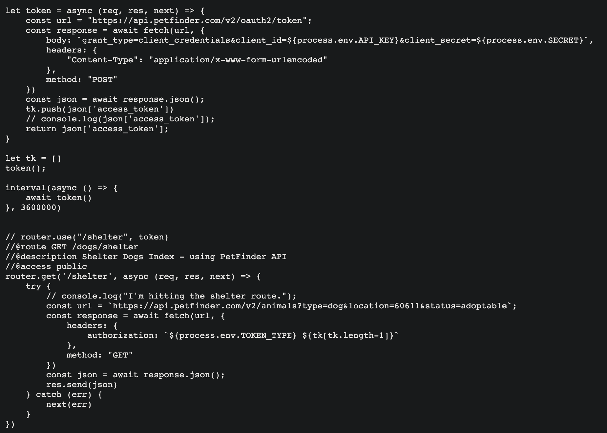

The Process

#1. Overview
Second Chance is a dog adoption awareness site. I built this website because I am a dog lover - and a dog mother - and I wholeheartedly believe that every dog deserves a loving home. Second Chance allows users to see dogs that are currently in shelters near the Chicagoland area. It also allows for current dog owners that are in need of rehoming their dog the ability to create a profile for their dog to help the owner find their dogs forever home. If a user is looking to adopt and would like to see specific dogs near them they can register and find dogs that match their specific criteria. I used the MERN stack and the Petfinder API for this project. From the start, I was very focused on the user experience. I drew out all my wireframes and mapped out all the possible ways I could see a user utilizing my site. I then spent time learning best practices when developing a MERN app. I utilized React Router and found it to be a fun and intuitive way to navigate it helped me achieve the user experience that I had envisioned. If time had permitted, I would have implemented either React Hooks or Redux for state management.
#2. Context & Challenge
There are millions of dogs that are turned over to shelters. I wanted to build an app that would be the intermediate step before that. I am a dog lover, dog parent, and I want to see every dog have a warm and loving home. When I created my app, I wanted to give my users the ability to see dogs that are currently in shelters or in that intermediate step. I used the Petfinder API to get the JSON data of current dogs in shelters. The Petfinder API uses O-Auth for secure authentication. Therefore, to receive any data, I had to make a query to receive an access token first - this was a problem. Then my access token was only valid for an hour - this was another problem. Lastly, I had to figure out a way to make the access token accessible to my routes.
#3. Process & Insight
I work very methodically. In the first few days, I spent time conducting research and planning how and what technologies I was going to use for my app. Then I worked on the backend and then proceeded to the frontend. Every day during stand-ups, I would declare my daily game plan.
#4. Solution
This is how I went around Petfinder API O-Auth:

#5. Result
I was very pleased with how the app turned out. I spent a lot of time and energy getting it function and appear how I envisioned. I anticipated that React would be the most challenging part. However, it turned out to be very seamless because I used React Router. Despite, the unexpected challenges I did face in the beginning - I overcame them.
#6. Technologies
MERN Stack (MongoDB | Express | React| Node.JS )
Petfinder API | React Router | Reactstrap
Pending Deployment